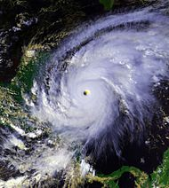

帮助
帮助
社群首页
方针与指引
互助客栈
知识问答
字词转换
IRC即时聊天
联络我们
关于维基百科
资助维基百科
工具
链入页面
相关更改
上传文件
特殊页面
维基数据项
左侧跳顶连接
其他语言
Simple English
العربية
Bahasa Indonesia
Bahasa Melayu
Bosanski
Български
Català
Čeština
Dansk
Deutsch
Eesti
Ελληνικά
Español
Esperanto
Euskara
فارسی
Français
Galego
한국어
עברית
Hrvatski
Italiano
ქართული
Latviešu
Lietuvių
Magyar
Nederlands
日本語
Norsk bokmål
Norsk nynorsk
Polski
Português
Română
Русский
Slovenčina
Slovenščina
Српски/srpski
Suomi
Svenska
ไทย
Tiếng Việt
Türkçe
Українська
中文
吴语
粵語
Vahcuengh
维基百科语言列表
耶稣基督的女孩是美国福音派女性基督教组织，旨在向色情产业中的女性工作者传福
音。该组织不会试图说服女性脱离色情产业，但会对希望脱离的女性伸出援手。组织的关注重点也不是要发展更多基督徒，而是为了传达这样的理念：世界上有很多基督徒，他们不会因女性从事色情产业而抱持批判态度，并且愿意接受她们。此外，该组织还会对希望克服色情成瘾的男性和女性提供帮助。该组织由希瑟·维奇创办，她曾做过4年脱衣舞娘，成为基督徒后退出了色情产业。在加利福尼亚州美南浸信会的支持下，她于2005年3月的圣周五在加利福尼亚州里弗赛德的桑多斯教堂创办耶稣基督的女孩。2006年1月，耶稣基督的女孩前往拉斯维加斯，在成人影带新闻成人娱乐博览会布有展位，引来大量关注和新闻报道。到了2008年，维奇已迁往拉斯维加斯，以附近城市亨德森的中央基督教堂作为组织根据地。2007年，耶稣基督的女孩在岩石教堂开设圣地亚哥分会，其创立者是曾做过脱衣舞娘和应召女郎的特丽萨·谢尔，以及社会工作者雪莉·布朗。加利福尼亚州美南浸信会发言人特里·巴罗内表示，耶稣基督的女孩的志愿者们“所做的正是耶稣所做的……他向妓女和税吏传道”。加利福尼亚州圣贝纳迪诺的一名浸礼宗牧师批评耶稣基督的女孩没有明确鼓励女性退出色情产业，他为此引用马太福音第6章第24节，这段圣经经文中指出，同一人不能事奉二主，意指脱衣舞娘必须辞去工作后才能前往教堂。对此维奇反问：“我们难道应该要求那些贪食的人要少吃一点才能上教堂？”《卡尔加里先驱报》的菲利普·谢维尔认为，耶稣基督的女孩所进行的传福音活动是“美国最不寻常的基督教外联活动”。
其他特色条目：威廉·奥康奈尔·布拉德利 - 西蒙·玻利瓦尔·巴克纳 - 约瑟夫·德沙
特色列表：诺贝尔和平奖得主列表 - 剑桥大学学院列表 - 香港博物馆列表
你知道吗?
- 纳粹德国曾经计划将哪艘重巡洋舰改造成航空母舰？
- 2015年美国的哪场枪击案导致两名工作中的记者遇难，且全过程被在电视上直播？
- 国际贸易使用的什么法律术语，指的是应税货物储存其中暂时豁免关税；瑞海国际物流经营项目即属于此
类？ - 1997年的哪场四级太平洋飓风重创墨西哥，导致数百人丧生，经济损失超过4亿美元，其名称也因此退役，
今后永远都不会再在东太平洋风暴命名时采用？ - 江泽民、胡锦涛和习近平均曾获某国赠送汗血马，这个国家的对华关系如何？
- 2015年，记录台湾慰安妇疗伤过程的《芦苇之歌》上映，哪位老妇人是片中已过世的主角之一，因不懂闽
南语难以和片中其它阿嬷沟通，但每次聚会总是带动气氛，拉一起其他阿嬷共舞？
优良条目
 飓风米奇的气象历史从1998年10月下旬开始，11月上旬结束，持续时间超过半个月。系统源于10月10日离开非洲西海岸的东风波，于10月22日在加勒比海西南部上空发展成第十三号热带低气压。系统的前进方向形成小规模环路，并在此期间增强成热带风暴米奇。由于高压脊出现薄弱环节，气旋缓慢转向北上。风暴组织结构一度因附近上层低气压产生的风切变而变得混乱，但很快就因水温升高、外流格局改善等多种利好因素影响迅速强化，于10月24日升级成飓风并发展出风眼。转向西进后，米奇快速增强，于10月25日成为大型飓风，并在次日达到萨菲尔-辛普森飓风等级下最高的五级飓风标准。达到最高强度后，米奇在洪都拉斯北面近海保持高达每小时285公里的最大持续风速，飓风猎人侦察机测得的最低气压低至905毫巴（26.7英寸汞柱），刷新10月北大西洋热带气旋的最低气压纪录，并且也和1969年的飓风卡米尔并列成为当时气压第四低的大西洋飓风。美国国家飓风中心和多个热带气旋预测模型都预测，风暴会转向北上，对尤卡坦半岛构成威胁。但米奇实际上却因受高压脊影响而南下，气象机构当时没有发现这个高压脊。风暴因与陆地相互作用而减弱，于10月29日以风力时速130公里强度登陆洪都拉斯。气旋转向西进，在陆地上空缓慢弱化，但仍在附近海域上空保留有深层对流。经过中美洲山区后，米奇的表面环流于11月1日消散。次日，系统残留到达墨西哥湾，于11月3日重新组织成热带风暴。气旋加速向东北方向的冷锋逼近，穿过尤卡坦半岛后又于11月5日吹袭佛罗里达州西南部。此后不久，米奇转变成温带气旋，美国国家飓风中心继续追踪至11月9日止。
每日图片
图为著名爵士乐小号演奏家路易斯·阿姆斯特朗。
更多每日图片
- 因执导恐怖电影《半夜鬼上床》和《惊声尖叫》而闻名的美国导演韦斯·克拉文逝世，享年76岁。
- 美国华盛顿州奥卡诺根县等地发生多起大规模山火，造成3人死亡和2,000多人被迫撤离。
- 2015年世界田径锦标赛（图）在中国北京市举办闭幕仪式，其中由肯尼亚代表队赢得最多比赛奖牌。
- 沙特阿拉伯国家石油公司位于东部省的员工宿舍发生大火，造成11人死亡和200多人受伤。
- 3名半岛电视台英语频道工作的记者在遭到长期拘留后，埃及法院以散播虚假消息罪名判处3年有期徒刑。
最近逝世：奥利佛·萨克斯 － 约瑟夫·韦索沃夫斯基 － 达里尔·道金斯
候选·讣闻·更多新闻
历史上的今天
9月1日：
- 1775年 法国国王路易十四逝世
（图），他是世界上在位时
间最长的君主，在位长达72
年3月18天。 - 1920年 为了纪念美国与英国在签署
《根特条约》后所维持长达
100年之和平关系的时间喷泉正式在美国芝
加哥雕刻完成。 - 1939年 纳粹德国军队自维隆发动波兰战役入侵波兰
领土，开辟了第二次世界大战的欧洲战场。 - 1952年 欧内斯特·米勒·海明威的小说《老人与海》
首次在《生活》杂志上发表，后来更进一步
获得普利策小说奖。 - 1983年 苏联拦截机在北太平洋萨哈林岛附近上空击
落民用客机大韩航空007号班机，造成飞机
上23名 机组人员与246名乘客全数丧生。
蔡易余 · Super A' Can ·
亚洲各国最低合法性交年龄 · 陈思祺 ·
729全台大停电 · 琥珀宫 · 白晓燕命案 ·
宋蘋恩 · 李朝卿 · 出身成分
维基百科由非营利组织维基媒体基金会运作。基金会旗下尚有其他数个多语言、内容开放的维基计划：
- 维基词典
多语言字词典 - 维基新闻
自由内容的新闻 - 维基共享资源
自由的多媒体资料库
 维基文库
维基文库
自由内容的图书馆- 维基物种
物种目录  维基数据
维基数据
自由的知识库
 维基语录
维基语录
名人名言的集锦images/ 维基导游
维基导游
自由的旅行指南 MediaWiki
MediaWiki
Wiki软件开发
 维基教科书
维基教科书
自由的教科书和手册 维基学院
维基学院
自由的研习社群- 元维基
协调各维基计划